Modules and Cargo
the shape of a growing project, and the tool that builds it.
One file stops scaling
You start with one file. main.rs. It works fine at first.
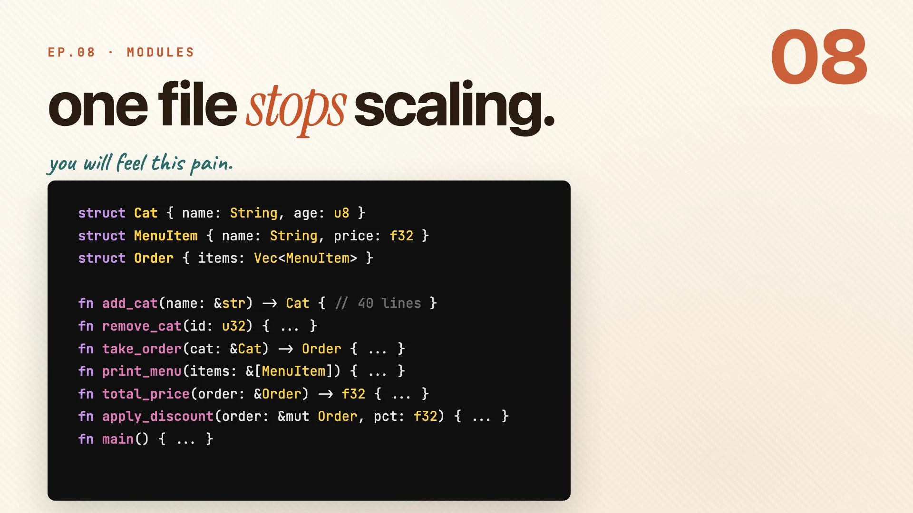
Then you add a few structs. A few functions. Then a few more.
struct Cat { name: String, age: u8 }
struct MenuItem { name: String, price: f32 }
struct Order { items: Vec<MenuItem> }
fn add_cat(name: &str) -> Cat { /* 40 lines */ }
fn take_order(cat: &Cat) -> Order { /* ... */ }
fn print_menu(items: &[MenuItem]) { /* ... */ }
// main.rs is now 400 lines and still growing...
And suddenly it's four hundred lines of nowhere. You go to add the next function and you have no idea where it belongs.
- Same file holds your structs, your business logic, and
main. - Nothing is grouped. Nothing has a home.
- Every new feature makes it worse.
Three keywords fix this: mod, pub, and use. That's the whole lesson, and the rest of this guide is just those three in detail.
Remember: one file does not scale. mod, pub, use is the fix.
Module tree
Book · §7.1Before any syntax, you need the map. Rust nests your code in three layers: a package holds crates, a crate holds modules, and a module is just a named scope. Get those rings straight and the keywords fall into place.
Package, crate, module
Rust organizes code in three nested layers. Think rings, outside in.
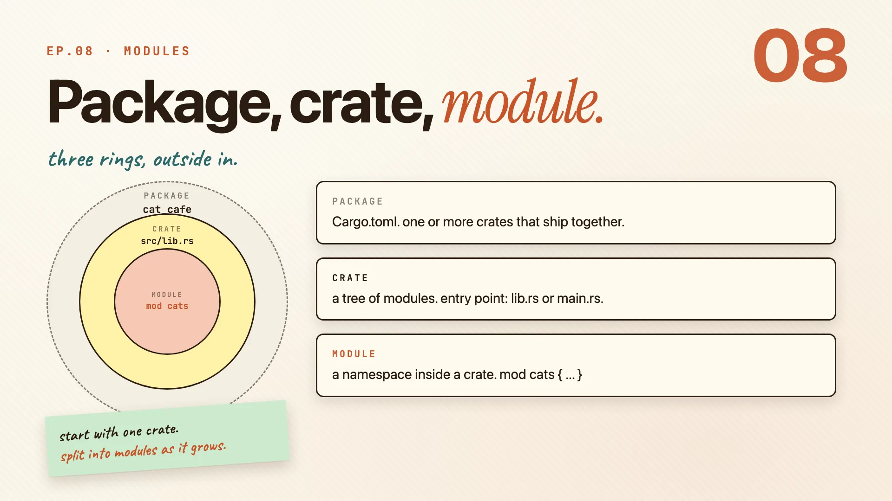
- Package is the outer ring.
Cargo.tomldefines it, and it ships one or more crates together. - Crate is the middle ring. It's a tree of modules, and its root is
lib.rsormain.rs. - Module is the inner ring. It's a named scope inside a crate, like
mod cats.
| Ring | What it is | Defined by |
|---|---|---|
| package | the thing you build and publish | Cargo.toml |
| crate | one tree of modules | lib.rs or main.rs |
| module | a namespace inside the crate | mod cats { ... } |
A module is the part you create most. Each one is a separate namespace, so mod cats and mod orders never collide.
mod cats {
// a named scope, all its own
}
Remember: package wraps crate wraps module. rings, outside in.
A real module tree
Here is a real one. The cat_cafe package, with a Cargo.toml at the root and a src folder holding the crate.
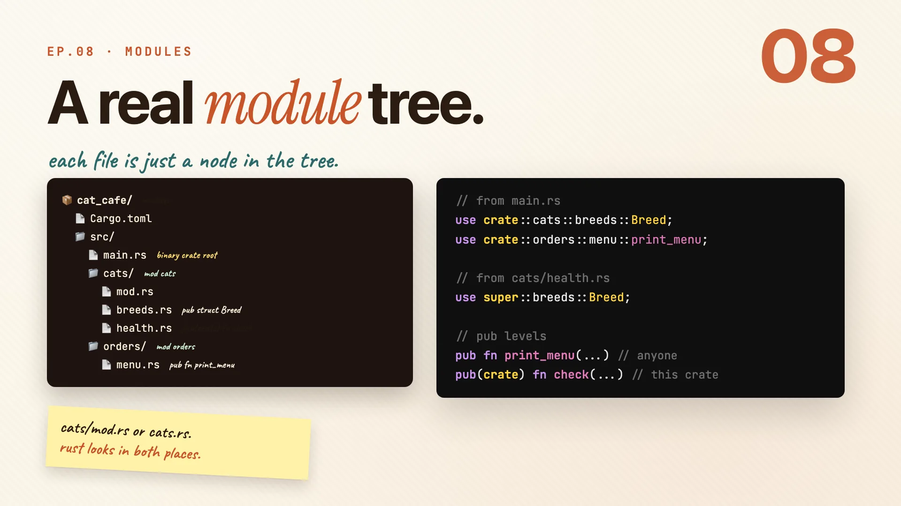
The cats folder becomes the cats module. Each file inside it is a submodule.
cat_cafe/
├─ Cargo.toml
└─ src/
├─ main.rs // binary crate root
├─ cats/ // mod cats
│ ├─ mod.rs
│ ├─ breeds.rs // pub struct Breed
│ └─ health.rs // pub(crate) fn check
└─ orders/ // mod orders
└─ menu.rs // pub fn print_menu
To reach a name, you write a path. Two kinds show up constantly:
crate::starts from the crate root, so it works from anywhere.super::steps one module up, like..in a file path.
use crate::cats::breeds::Breed; // from the crate root
use crate::orders::menu::print_menu;
use super::breeds::Breed; // from cats/health.rs, one up
You can name a module folder cats/mod.rs or a single file cats.rs. Rust looks in both places, so pick whichever fits how big the module is.
Remember: cats/mod.rs or cats.rs. rust looks in both places.
mod, pub, use
Book · §7.2-7.4Now the three keywords from the hook, one at a time. mod declares a module, pub decides who can see what's inside, and use pulls a name into scope so you stop typing the full path. That's the whole toolkit.
Two ways to mod
You can write a module inline, or point Rust at a file. Same result, different size.
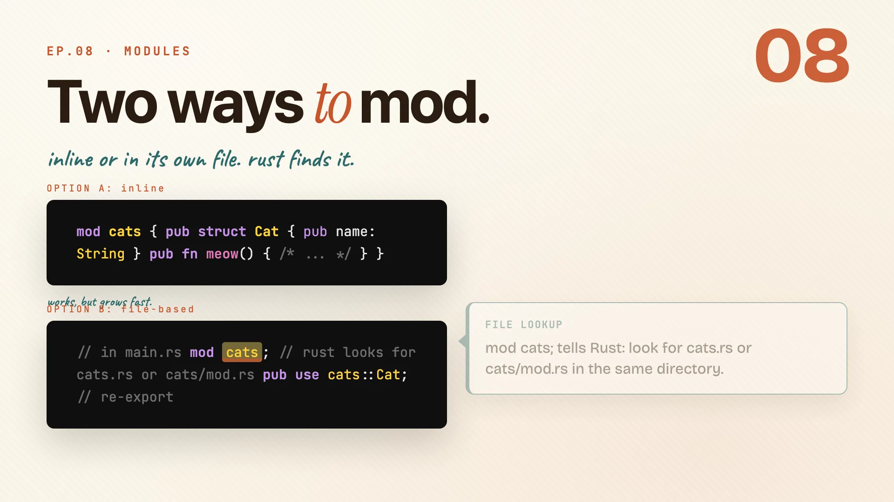
Inline keeps everything in one place. It works, but it grows fast, which is exactly the pain we just showed.
// OPTION A: inline
mod cats {
pub struct Cat { pub name: String }
pub fn meow() { /* ... */ }
}
The better option for anything real is a mod cats; with a semicolon. That tells Rust to go find the file.
// OPTION B: file-based, in main.rs
mod cats; // rust looks for cats.rs or cats/mod.rs
pub use cats::Cat; // re-export: callers see Cat as yours
| Style | Code lives | Reach for it when |
|---|---|---|
inline mod cats { } |
in the same file | the module is tiny |
file-based mod cats; |
in cats.rs or cats/mod.rs |
it has grown past a few lines |
Items inside a module are still private. You opt in with pub. And pub use re-exports a name so callers see it as if you defined it right there.
Remember: split into a file when the inline version gets long.
The four visibility gates
Default visibility is the narrowest one: private. You opt in to wider visibility from there.
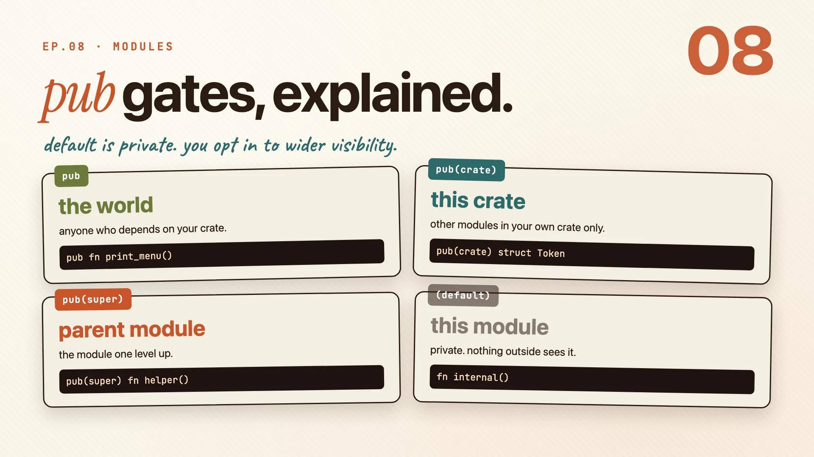
| Keyword | Who can see it | Example |
|---|---|---|
pub |
the world, anyone who depends on your crate | pub fn print_menu() |
pub(crate) |
this crate, your own modules only | pub(crate) struct Token |
pub(super) |
the parent module, one level up | pub(super) fn helper() |
| (none) | this module only, private | fn internal() |
The rule is simple:
- Start private. Nothing leaks until you say so.
- Promote only what callers actually need. Each
pubis a promise you have to keep. - You can widen later, but you cannot take it back. Making something more public is easy; un-publishing it is a breaking change.
Remember: start private. promote only what callers actually need.
use, paths, re-exports
use brings a name into scope so you stop typing the full path every time. The path prefix decides where it starts.
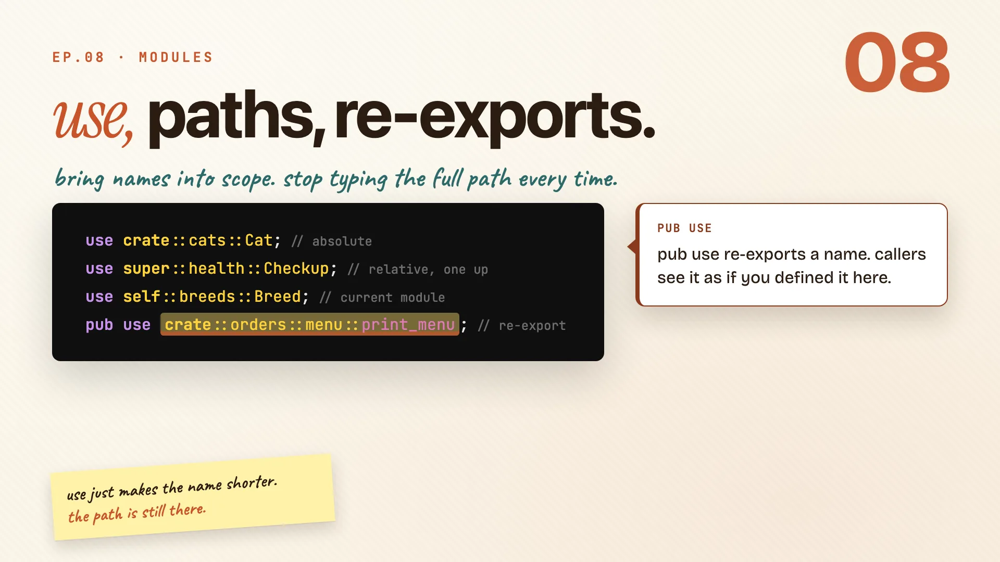
use crate::cats::Cat; // absolute, from the crate root
use super::health::Checkup; // relative, one module up
use self::breeds::Breed; // the current module
pub use crate::orders::menu::print_menu; // re-export
| Prefix | Starts from | Notes |
|---|---|---|
crate:: |
the crate root | always works from anywhere |
super:: |
the parent module | like .. in a file path |
self:: |
the current module | rare, but handy in mod.rs re-exports |
The last line is the special one. pub use re-exports a name, so callers see it as if you defined it yourself. That's how libraries build a clean public API: hide the deep module path, expose one tidy name.
Remember: use just makes the name shorter. the path is still there.
Before and after
Here is the payoff. One file, four hundred lines, becomes three small ones.
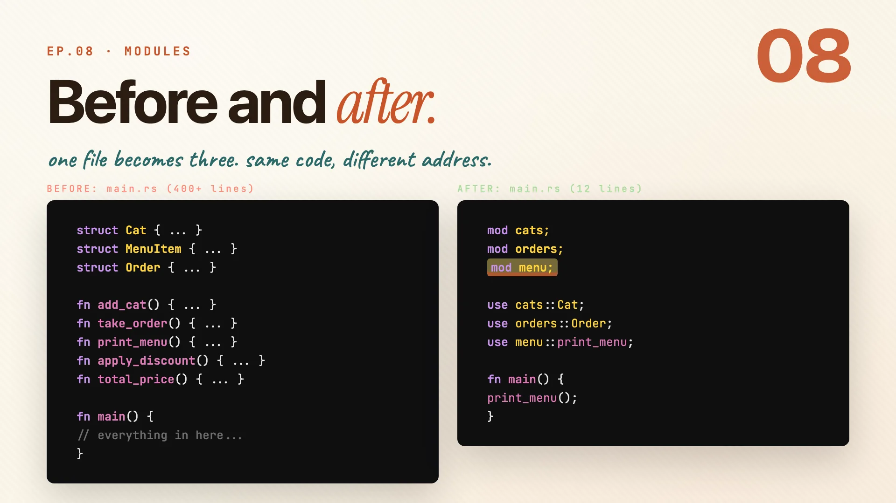
Before: structs, functions, business logic, all piled into main.rs. You've seen this one.
After: three lines of mod, three lines of use, twelve lines total. Rust finds each file automatically.
mod cats; // rust looks for cats.rs or cats/mod.rs
mod orders; // same for orders
mod menu; // and the menu module
use cats::Cat;
use orders::Order;
use menu::print_menu;
fn main() {
print_menu();
}
- Each
modline points Rust at a file. No wiring, no config. - Everything inside those files stays private until you
pubit. - The logic never changed. Only where it lives did.
Remember: same code. different zip code.
Cargo.toml
Book · Ch 14Modules organize your code. Cargo organizes your project. Open Cargo.toml and meet the file that names the package, pulls in dependencies, and tells the compiler how to build.
Cargo.toml, section by section
Every Rust project has a Cargo.toml. A few sections do almost all the work.
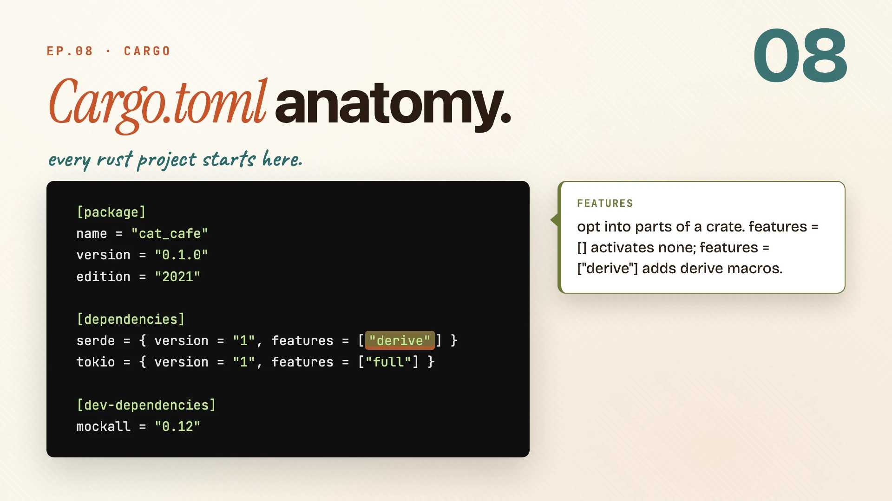
[package]
name = "cat_cafe"
version = "0.1.0"
edition = "2021"
[dependencies]
serde = { version = "1", features = ["derive"] }
tokio = { version = "1", features = ["full"] }
[dev-dependencies]
mockall = "0.12"
[package]is required: name, version, edition. The edition sets the Rust language version, and2021is the current stable one.[dependencies]is where external crates go. You name the crate and a semver range like"1"(any1.x), and cargo fetches it from crates.io.features = [...]opts into parts of a dependency, like"derive"on serde.[dev-dependencies]are only compiled for tests and benchmarks. They never end up in your final binary.
Remember: cargo handles the rest. you just name what you need.
dev vs release
Cargo ships two build profiles out of the box, each tuned for a different moment.
[profile.dev]
opt-level = 0 # fast compile
debug = true # full debug info
[profile.release]
opt-level = 3 # max speed
lto = true # link-time opt
cargo build (dev) |
cargo build --release |
|
|---|---|---|
| opt-level | 0, no optimizing |
3, max speed |
| compile time | fast | slower |
| debug info | full | stripped |
| use it for | day-to-day development | what you ship |
You can also write a custom [profile.something] and inherit from dev or release. Handy for a profiling build that keeps debug info but is still optimized.
Remember: dev compiles fast. release ships fast.
fmt, clippy, doc
Three tools you'll reach for every single day, and one more for when you're ready to share.
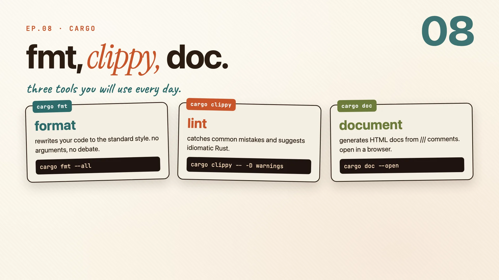
| Command | What it does | Try |
|---|---|---|
cargo fmt |
rewrites your code to the standard style, no debate | cargo fmt --all |
cargo clippy |
idiomatic lint, catches what the compiler won't | cargo clippy -- -D warnings |
cargo doc |
builds HTML docs from your /// comments |
cargo doc --open |
cargo fmtends every formatting argument before it starts. There's one standard style and this applies it.cargo clippyflags common mistakes and suggests the more idiomatic way.cargo docturns your///comments into a browsable site, and--openlaunches it.
When the crate is ready, cargo publish sends it to crates.io. Bump versions with semver so you don't break the people depending on you.
Remember: cargo publish shares it with the world. semver keeps everyone sane.
Workspaces
Book · §14.3One package gets you far. When you have many crates that ship together, a workspace ties them under one roof. The best example is this very repo: the whole video series is one.
Workspaces scale projects
A workspace is a group of crates that live together, with one Cargo.toml at the root.
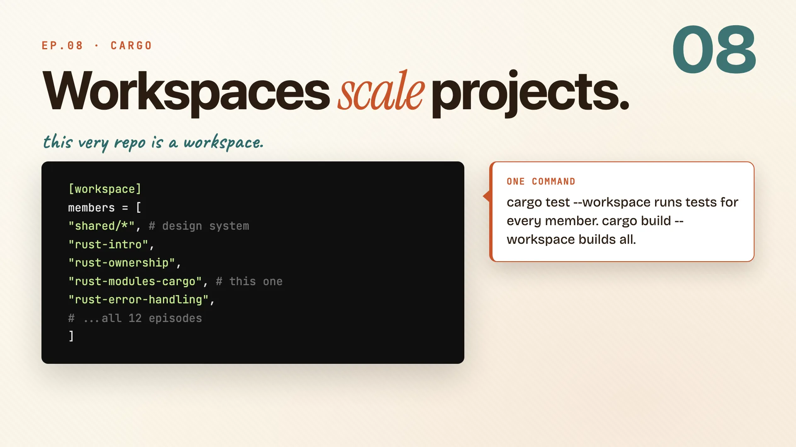
[workspace]
members = [
"shared/*", # design system
"rust-intro",
"rust-modules-cargo", # this one
"rust-error-handling",
# ...all 12 episodes
]
What you get for grouping them:
- One lock file. Every member shares the same
Cargo.lock, so there are no version conflicts between crates. - One command.
cargo test --workspacetests every crate at once, andcargo build --workspacebuilds them all. - Shared deps. Define a version once in
[workspace.dependencies]and members inherit it withdep = { workspace = true }, no repeating the number.
This series is itself a workspace. All twelve episodes are members, and they share the video-kit design system as a local crate.
Remember: each member is a crate. the workspace is the project.
Features and gates
Features let you gate parts of your crate behind an opt-in flag, so callers compile only what they need.
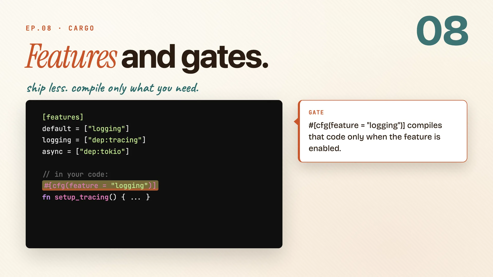
Declare them in [features]. The default list is the set that turns on automatically.
[features]
default = ["logging"]
logging = ["dep:tracing"]
async = ["dep:tokio"]
Then gate code with cfg. That block compiles only when the feature is on, at compile time, not at runtime.
#[cfg(feature = "logging")]
fn setup_tracing() { ... }
To turn a feature on, pass it at build time or add it in Cargo.toml:
cargo build --features async
Because it's resolved while compiling, code behind an off feature simply isn't in the binary. There's no runtime check and no dead weight.
Remember: features = conditional compilation without runtime cost.
The whole episode in one line:
One file does not scale. Modules give your code an address and cargo gives your project a shape. Structure is a feature, not a chore.
Cheatsheet recap
One line per idea, in order. Skim this when you just need the reminder.
| Idea | Remember |
|---|---|
| One file stops scaling | one file does not scale. mod, pub, use is the fix. |
| Package, crate, module | package wraps crate wraps module. rings, outside in. |
| A real module tree | cats/mod.rs or cats.rs. rust looks in both places. |
| Two ways to mod | split into a file when the inline version gets long. |
| The four visibility gates | start private. promote only what callers actually need. |
| use, paths, re-exports | use just makes the name shorter. the path is still there. |
| Before and after | same code. different zip code. |
| Cargo.toml, section by section | cargo handles the rest. you just name what you need. |
| dev vs release | dev compiles fast. release ships fast. |
| fmt, clippy, doc | cargo publish shares it with the world. semver keeps everyone sane. |
| Workspaces scale projects | each member is a crate. the workspace is the project. |
| Features and gates | features = conditional compilation without runtime cost. |
Practice: Rustlings
10_modules, 22_clippy.